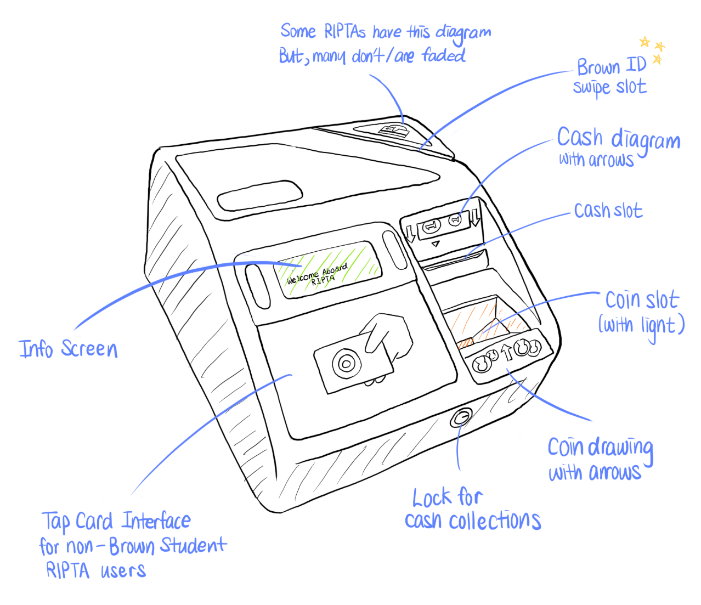
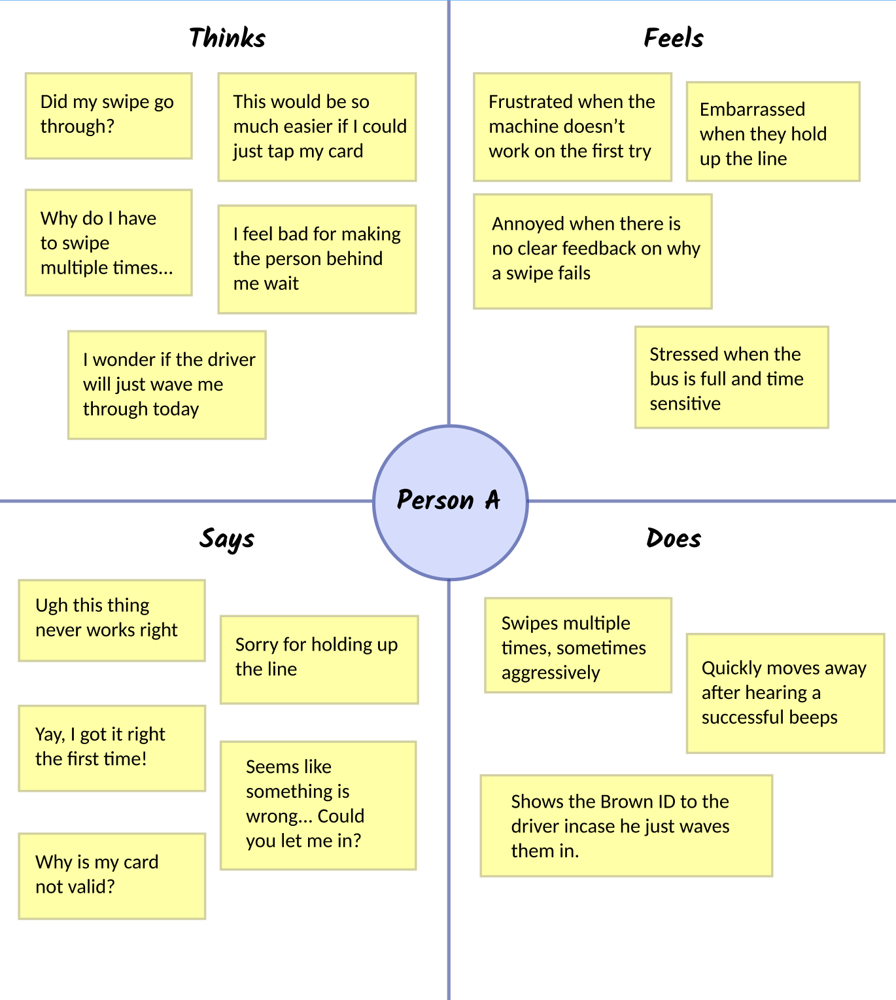
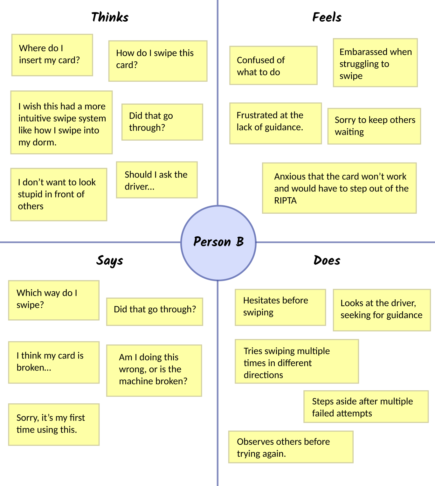
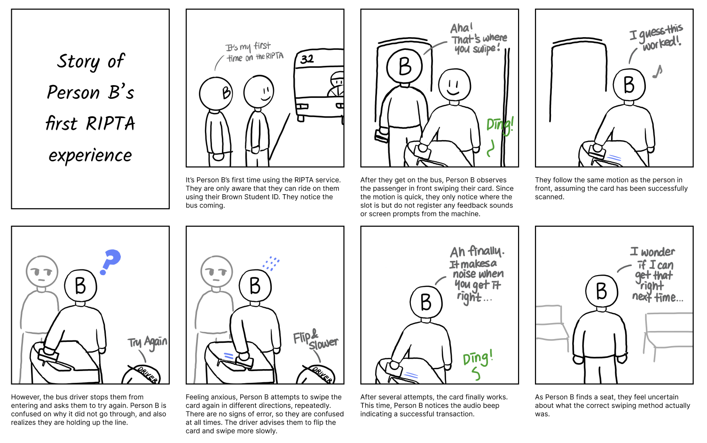

Introduction
The RIPTA (Rhode Island Public Transit Authority) is a public transportation accessible to all Brown University students with their student ID. This study explores the usability of this system, focusing on how users (Brown University Students) interact with the swipe mechanism, common difficulties encountered, and potential improvements to enhance accessibility and efficiency.
Part 1: Preparation

The study is conducted through direct observation and user interviews to analyze the efficiency of the swipe interface. The key focus is to understand usability barriers and how users respond to system feedback.
Interface Selection
The RIPTA card swipe interface allows passengers to pay their fare using a swipe-based card system. The primary components include:
- A card slot for swiping student IDs.
- An audio beep for successful swipes.
- A green screen that shows success text when transaction is made
- A "Card Not Valid" error sound, but no other error messages.
The system is simple as it eliminates the need for cash transactions, and requires only a swiping motion to access it. However, it presents ussability challenges such as unclear swipe direction, lack of error-specific feedback and inconsistent card detection
Interview Questions
- Can you describe your experience using the RIPTA card swipe interface?
- What do you find most intuitive about the interface?
- Have you ever encountered difficulties while using the interface?
- How does this interface compare to other public transit payment systems?
- What improvements would you suggest to make the interface more user-friendly?
- Have you observed other passengers struggling with the interface? If so, what challenges did they face?
- How do you feel about the feedback provided by the interface (e.g., sounds, screen messages, error notifications)?
Part 2: Recording Observations
Key Observations
- Users often swiped their cards multiple times before the machine registered the payment.
- Several users hesitated or reversed their card swipe due to unclear swipe direction.
- The only error message ever was "Card Not Valid". There were no indication of other issues such as incorrect swipe direction
- Some users walked away assuming the transaction was successful, only to be stopped by the driver to swipe again
- Passengers carrying large bags struggled to swipe their cards efficiently as it was placed in an inconvenient angle and height.
User Interview Notes
| User |
Interview Responses |
| Julia |
"I use RIPTA multiple times a week. It’s the easiest way for me to get to East Providence."
"I can tell where to swipe my card because of the slit, but sometimes I’m not sure which direction to swipe. If I don’t get it right the first time, it’s frustrating."
"Compared to other systems, this one kind of sucks. Most places let you tap your card, which is so much easier."
"I’ve seen other students struggle too. Some don’t know how it’s supposed to work, and they swipe the wrong way."
"Honestly, I think they should change it to a vertical swipe, like how store credit card readers work. I’ve never seen a system that needs a diagonal or horizontal swipe like this one."
|
| Avery |
"This system kinda sucks. I feel like it’s either broken or just doesn’t work half the time."
"I’ve swiped my card, and it seemed like it worked, but then there was an error noise. The driver just waved me on anyway."
"It seems like the swipe slit is easy to find, but sometimes my card gets stuck or angles weirdly, and I have to adjust it."
"If I had to choose, I’d rather have a scanner like the ones in dining halls. Swiping is just way more effort."
"At least you don’t have to buy a ticket online or go to a terminal beforehand, but still, they should just have a tap system instead."
|
| Jake |
"I use RIPTA somewhat weekly when I need to get to places that aren’t walkable."
"The small graphic showing how to swipe is helpful, but honestly, it’s faded, and sometimes I don’t even notice it."
"If the graphic wasn’t there, I’d probably swipe in the wrong direction. Even with it, I still get confused sometimes."
"I’ve never actually noticed the sound feedback before. I just look for the green screen to see if it worked."
|
Key Findings from User Interviews
- Directionality is a Major Challenge
- Users often struggle with swipe direction, leading to multiple failed attempts.
- The swipe direction graphic is faded and unclear, causing confusion.
- RIPTA’s horizontal and diagonal swipe motion is unintuitive compared to vertical swipes in other systems.
- Inconsistent Card Detection & Reliability Issues
- Users frequently need multiple swipes before the system registers their card.
- Unsuccessful swipes often result in drivers letting passengers board anyway, making enforcement inconsistent.
- Many users feel the system is unreliable and question whether their card or the machine is at fault.
- Feedback System is Not Noticed or Effective
- Users rely almost entirely on sound feedback, but some have never noticed it.
- Screen feedback is overlooked, indicating it is not prominent or clear enough.
- The "Card Not Valid" error provides no explanation, leaving users unsure why a swipe failed.
- Suggested Improvements
- Increase visibility of swipe direction indicators.
- Introduce contactless payment (tap-to-pay) for a faster experience.
- Enhance feedback mechanisms:
- Make screen notifications larger and more noticeable.
- Provide detailed error messages instead of just "Card Not Valid."
- Improve audio feedback with clearer cues.
Part 3: Personas
Person A (Frustrated Commuter)
Person A is a Brown University student who relies on RIPTA weekly but finds the swipe system frustrating due to frequent malfunctions and unclear feedback.

- Unclear error messages make it difficult to determine why a swipe fails.
- Inconsistent card detection, requiring multiple attempts.
- No clear visual or written instructions on swipe direction.
- No contactless payment option, making it outdated compared to other transit systems.
Person B (New User)
Person B is a first-year Brown University student new to RIPTA, experiencing anxiety and confusion due to the lack of clear instructions.

- No clear instructions on where or how to swipe the card.
- Anxiety from failing swipes and holding up the line.
- Unfamiliar with feedback cues, unsure if a swipe was successful.
- Swipe system is different from other systems, making it non-intuitive.
Part 4: Storyboarding
This storyboard illustrates the first-time experience of Person B using the RIPTA card swipe interface, highlighting the challenges and usability issues faced by new users.

This storyboard captures the following issues:
- Lack of clear swipe direction instructions leads to confusion and multiple failed attempts.
- Feedback mechanisms (audio and screen prompts) are not noticeable to new users.
- Bus driver intervention comes necessary, showing that the system lacks intuitive guidance
- Anxiety from holding up the line adds pressure, making the experience frustrating, and unable to reflect each actions carefully
- Even after a successful swipe, the user remains uncertain, indicating the need for improved feedback clarity.
Deployment
The webpage has been deployed with Vercel. View Live Page